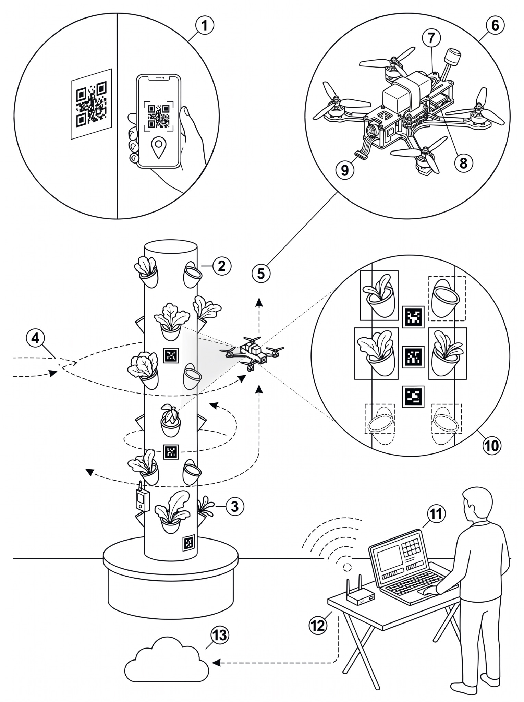

-
Step 1 · Register
Scan the tower sign
The farmer scans the printed QR sign; the phone saves its GPS as the tower location.
1 -
Step 2 · Fly and align
GPS gets near, markers align
The Pi finds the ArUco approach marker, then holds distance, height and face.
43 -
Step 3 · Scan and detect
Every face, bottom to top
YOLOv8 shows a live preview on the laptop; final counts come from the onboard recording.
510 -
Step 4 · Upload and view
Slot availability per tower
Saved offline first; the farmer uploads to the web dashboard when there is internet.
13

Figure 5 · Conceptual illustrationPrinted sign, no electronics
No internet needed on site
One drone, every tower